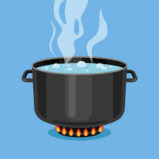
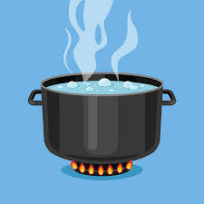

Week 5: Teaching Clean Water Methods
Day 1: Students were introduced to the importance of safe drinking water through presentations highlighting water-borne diseases and daily water usage.
Day 2: A survey or video-based exploration helped students identify common sources of contaminated water, followed by a comparison chart of safe vs. unsafe water sources. Day 3: Practical sessions demonstrated basic purification methods like boiling and filtering, where students built simple water filters using sand, gravel, and cloth. Day 4: The focus shifted to modern methods like RO and UV filtration, with students role-playing how to maintain household water purifiers. Day 5: Chemical purification techniques were introduced, including the safe use of chlorine and purification tablets, with water quality comparisons. Day 6: Students created awareness materials such as posters and skits, and participated in a Water Awareness Walk to educate the community about safe drinking water practices. 


Awareness sessions on purification methods like boiling, SODIS, and filtering techniques. The team demonstrated these methods to the community for better health outcomes.
Key Learnings
- Learned about various water purification methods.
- Practiced teaching and demonstration skills.
- Received feedback from community members.